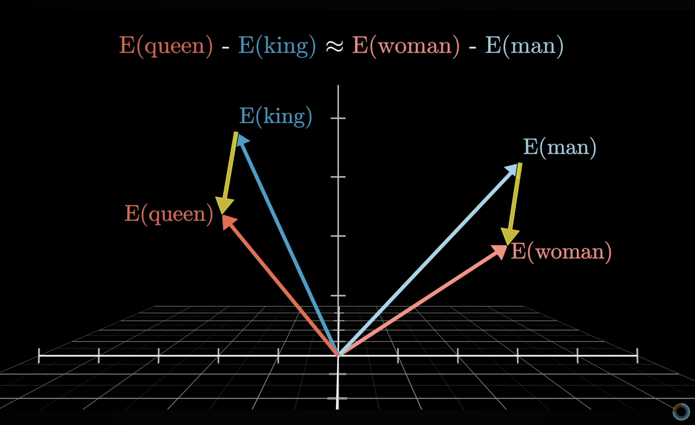
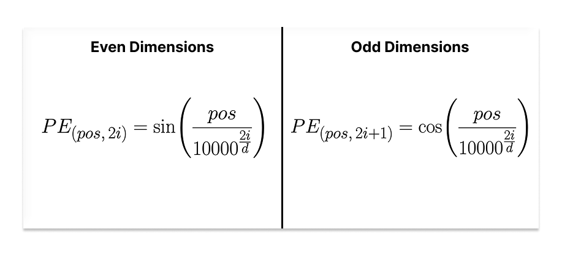
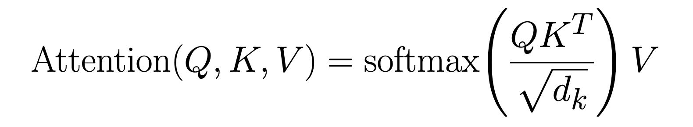
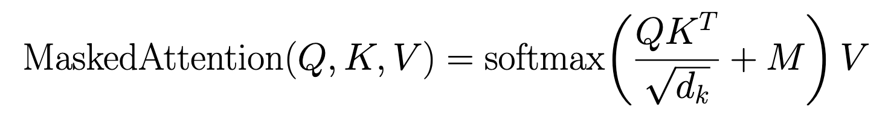
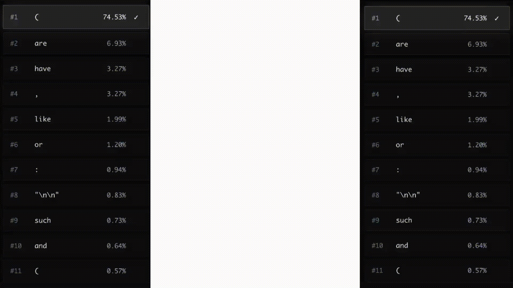

Introduction
You've probably asked an AI to write an email or explain a concept and watched it produce a surprisingly good answer in seconds. But have you ever stopped to wonder how it actually does that?
Under the hood of nearly every modern large language model (LLM) like ChatGPT, Claude, Grok, and Gemini, is an architecture called the transformer. It was introduced in the landmark 2017 paper "Attention Is All You Need", and it quietly became the foundation of one of the most significant technological shifts in recent history.
What looks like magic on the surface is actually a handful of simple mathematical ideas elegantly stacked on top of each other. In this post, I'll walk through each of them in an intuitive way. By the end, the next time you hit send on a prompt, you'll have a real sense of how responses are generated.
Background
To build a strong base understanding, it's important to note that the transformer was originally built to solve a very specific problem: translation.
Before transformers, most translation models were recurrent neural networks (RNNs), which read a sentence the way you might read it out loud: one word at a time, carrying a running memory of what they'd seen so far. This had two big problems. First, that memory faded, so by the end of a long sentence the model had partly forgotten the beginning. Second, reading one word at a time meant the work couldn't be done in parallel, which made RNNs slow to train on large amounts of text.
Researchers had already improved RNNs with a mechanism called attention, which let the model look directly at any earlier word instead of relying only on its fading memory. The transformer's big idea is right there in the paper's title: drop the recurrence entirely and build the model out of attention. A transformer looks at every word at once, so nothing fades, and it can process all of them in parallel on GPUs. That second point turned out to matter enormously. Because transformers train efficiently at massive scale, they could learn from far more text than any model before them, and they turned out to be good at almost every language task rather than being limited to just translation.
The original transformer had two halves: an encoder that read the source sentence, and a decoder that wrote the translation. Modern LLMs actually only keep the decoder. What's left is a single stack of layers with one critical job: given some text, predict the next token (roughly, the next word). To write a response, the model predicts one token, adds it to the text, and repeats.
That decoder-only model is what this post walks through. For each component, I'll explain the version from the original paper, since it's the simplest to understand, and briefly note where today's models do things differently.
Tokenization
Let's start our journey with your prompt. Before a transformer can do anything with it, it needs to solve a very fundamental problem: computers don't understand words, they understand numbers. Tokenization turns your text into numbers by breaking it into small chunks called tokens and giving each one an integer ID.
A token is often a whole word, but not always. Here's how the tokenizer used by GPT-4o actually splits a short prompt:
"Why are transformers so unreasonably effective?"
Real output from GPT-4o's tokenizer (o200k_base). A · marks a space; most tokens include the space before the word.
Common words like "are" and "effective" each get a single token, while the less common "unreasonably" is split into "un", "reason", and "ably". Your entire prompt becomes a simple list of numbers: [13903, 553, 152728, ...].
The full list of tokens a model knows is called its vocabulary. It's built before the model itself is trained, usually with an algorithm called Byte Pair Encoding (BPE). BPE starts with individual characters and repeatedly merges the most frequent pair of neighboring tokens into a new token, until the vocabulary reaches a target size. Modern vocabularies range from tens of thousands to a couple hundred thousand tokens.
So why does this work? Language is deeply repetitive below the word level. Pieces like "un", "ing", and "tion" show up in thousands of words, so the model can handle a word it has rarely or never seen by recognizing its parts. And because everything can be broken down into smaller pieces, the vocabulary stays a manageable size while still handling typos, code, foreign words, and everything in between.
Embeddings
Now that your prompt is a list of Token IDs that are essentially meaningless labels, the model now needs a way to turn these arbitrary IDs into something that captures meaning. This is what embeddings do.
An embedding turns each token ID into a vector: a long list of numbers (512 in the original transformer, and thousands in today's large models). Just like a vector with 3 numbers points to a location in 3D space, an embedding points to a location in a space with thousands of dimensions. During training, the model learns where to place each token's embedding so that tokens with similar meanings end up near each other in this high dimensional space. For example, "cat" and "feline" are close, while "cat" and "rocket" are far apart.
Directions in this space can carry meaning too. Here's a famous example: the difference between the vectors for "woman" and "man" is remarkably similar to the difference between the vectors for "queen" and "king".

Credit: 3blue1brown
In other words, some direction in the space has come to encode something like gender. With thousands of dimensions to work with, the model can encode many relationships at once like topic, tone, grammatical role, and much more. These relationships are learned during training, as words used in similar contexts tend to have similar meanings, and training on huge amounts of text pushes them toward similar vectors.
The math behind the embedding layer is simple. It's a big lookup table: a matrix with one row per token in the vocabulary. With a 50,000-token vocabulary and 512-dimensional embeddings, that's a 50,000 × 512 matrix, and converting a token ID into its embedding just means grabbing that row. The values of the matrix start out random and get adjusted during training.
There's one important limitation at this stage: a token always gets the same embedding, no matter what's around it. "Bank" has one vector whether the sentence is about a river or a savings account. Letting each token absorb context from the rest of the text is the job of attention. But first, the model needs to know what order the tokens are in.
Positional Encoding
Attention, which we'll get to next, works by comparing tokens with each other all at once. That's what makes it fast, but nothing in that math says which token came first. To attention on its own, "dog bites man" and "man bites dog" are identical because they contain exactly the same three tokens. Positional encoding puts the order back in by adding a position signal to each token's embedding.
In the original paper, that signal is a vector the same size as the embedding, built from sine and cosine waves:

Here, pos is the token's position in the sequence (counting from 0) and d is the embedding size. The dimensions are grouped into pairs, and i counts the pairs: pair i covers dimensions 2i and 2i + 1. The even dimension of each pair uses sine, the odd one uses cosine, and both use the same frequency. The first pairs oscillate quickly as the position increases, while later pairs change very slowly, a bit like the second, minute, and hour hands on a clock. Here's a worked example using a tiny embedding size of 6:
| Dim 0 | Dim 1 | Dim 2 | Dim 3 | Dim 4 | Dim 5 | |
|---|---|---|---|---|---|---|
| Pair (i) | 0 | 0 | 1 | 1 | 2 | 2 |
| Formula | sin(3 / 1) | cos(3 / 1) | sin(3 / 21.5) | cos(3 / 21.5) | sin(3 / 464) | cos(3 / 464) |
| Positional vector | 0.141 | −0.990 | 0.139 | 0.990 | 0.006 | 1.000 |
| + Token embedding | 0.62 | −1.35 | 0.18 | 0.91 | −0.44 | 1.07 |
| = Final vector | 0.761 | −2.340 | 0.319 | 1.900 | −0.434 | 2.070 |
A token at position 3 with d = 6. The embedding values are made up; the positional values are exact, rounded to 3 decimals.
Notice how the first pair swings widely, while the last pair has barely moved from (0, 1). The positional vector is added directly to the token's embedding, so the result still carries the token's meaning, but now it carries its position too. The same word at two different positions ends up with slightly different vectors.
So why sine and cosine? Because the waves are smooth, nearby positions get similar encodings, and distant positions get different ones. There's also a more elegant property: moving from any position to the position k steps later is the same simple transformation (a rotation of each pair), no matter where in the sequence you start. That makes it easy for the model to learn patterns like "the word two positions back" that work anywhere in the text.
Modern models have mostly moved on from this exact formula. GPT-2 and GPT-3 learned their position vectors during training, and most recent open models use rotary positional embeddings (RoPE), which apply position inside the attention step instead of adding it to the embedding. The goal is the same: give the model a sense of order.
Attention
Each token now has a vector encoding its meaning and its position. Attention is how each token gathers context from the rest of the text, and it's the most important idea in the entire architecture.
Think about this sentence: "The animal didn't cross the street because it was too tired". By the time you reach "tired", you know "it" means the animal, not the street. To make that connection, your brain subconsciously reached back and linked "tired", "it", and "animal". Attention gives the model the same ability. For every token, it asks: which of the tokens so far are relevant to me, and what information should I take from them? Each token's vector is then updated to reflect what it means in this context rather than just what it means on its own.
To do this, each token's vector is multiplied by three weight matrices, WQ, WK, and WV, which contain values learned during training. This produces three new vectors per token:
- Query (Q): what this token is looking for.
- Key (K): what this token advertises about itself, used to check whether it matches someone's query.
- Value (V): the information this token actually passes along if it's deemed relevant.
It's a lot like a search engine: your query is compared against the keys (like page titles) of every result, and the best matches decide which content (values) you get back. Once every token has its Q, K, and V, the attention formula takes over:

Step 1: Score. QKT takes the dot product of every token's query with every token's key. A dot product measures how aligned two vectors are: vectors pointing in similar directions give a large number, while unrelated ones give something near zero. The result is a grid of relevance scores, one for every pair of tokens.
Step 2: Scale. The scores are divided by √dk, where dk is the number of dimensions in each key vector. Dot products get bigger as vectors get longer, and without this step, the next step would put nearly all of its weight on a single token.
Step 3: Softmax. Softmax turns each token's row of scores into weights that are all positive and add up to 1. Higher scores get larger weights, and because softmax uses exponentials, the gaps get exaggerated, so the most relevant tokens dominate.
Step 4: Blend. Finally, the weights are multiplied by V. Each token's output is a weighted average of the value vectors, so the tokens it found most relevant contribute most of the information, and irrelevant ones contribute almost nothing.
So why does this work? The model is never told which words relate to which. Instead, training adjusts WQ and WK so that related tokens produce queries and keys that align, and WV so that the right information gets passed along. Softmax matters here too: because it produces smooth weights rather than a hard yes or no, small changes to the weights cause small changes in the output, which is what lets backpropagation improve them gradually.
An LLM adds one rule on top of this: a token can only attend to itself and the tokens before it, never the ones after. This is done by adding a mask M to the scores before the softmax, with 0 for allowed positions and −∞ for future ones:

Since softmax uses exponentials and e−∞ = 0, every future token gets exactly zero weight. You'll see why this rule matters when we get to training.
Finally, the transformer doesn't run attention just once per layer. It runs several copies side by side, each with its own WQ, WK, and WV. This is called multi-head attention (the original paper used 8 heads). Each head can learn to track a different kind of relationship: one might link pronouns to the nouns they refer to, while another tracks which words describe which. The heads' outputs are combined and multiplied by one more learned matrix, producing a single updated vector per token.
The Transformer Block
Attention is one half of the transformer's basic building block, usually called a block or layer. Each block has two steps:
- Masked multi-head attention, where tokens gather context from the tokens before them.
- A feed-forward network, applied to each token's vector on its own. It expands the vector to a larger size (4× in the original paper), applies a ReLU (which sets negative values to zero), and compresses it back to its original size.
Attention is where tokens share information, while the feed-forward network is where each token processes what it just gathered. Research suggests that many of the facts a model learns are stored in these layers.
Each step is also wrapped with two helpers. A residual connection adds the step's input back to its output, so each step only has to learn an adjustment rather than rebuild the vector from scratch. Layer normalization then rescales the result to keep its values in a stable range. Together, they make it possible to train very deep stacks.
The dashed block repeats N times, each copy with its own weights. The projection and softmax run once, at the end.
The full model is simply this block stacked many times: 6 in the original paper, 96 in GPT-3, and over 100 in some of today's largest models. Research suggests that earlier layers tend to pick up simpler, local patterns like grammar and common word pairings, while later layers build more abstract representations of what the text is about. Modern models tweak the details (for example, swapping ReLU for smoother functions and normalizing before each step instead of after), but the structure is the same.
Generating Text
After the last block, the model has one vector per token. To predict what comes next, it takes the vector at the final position and passes it through a linear projection, which produces one score for every token in the vocabulary. A softmax then turns those scores into probabilities: every token in the vocabulary gets a probability, and they all add up to 1.
The next token is then picked from that distribution, and how it's picked depends on a setting called temperature. Before the softmax, the scores are divided by the temperature. A low temperature sharpens the distribution so the most likely tokens win more often, and a high temperature flattens it so less likely tokens get more of a chance. At a temperature of 0, the model always picks the single most likely token. In theory that makes the output fully deterministic, though in practice tiny numerical differences on GPUs can still cause occasional variation. It's important to note that temperature isn't part of the model itself. It's rather chosen each time the model is run, usually by the app or developer calling it.

Credit: ozera.app
The chosen token is added to the end of the sequence, and the whole process runs again to predict the token after that. The model writes one token at a time, each chosen with the entire text so far in view, until it produces a special end-of-sequence token (or hits a length limit). The token IDs are then mapped back into text. Chat apps usually show each token as soon as it's generated, which is why responses appear to stream in word by word.
Conceptually, every step re-reads the entire sequence. In practice, models save the keys and values they've already computed for earlier tokens (a KV cache), so each new step only has to process the newest token. This works because of the mask: earlier tokens never look at later ones, so their keys and values never change.
How It Learns
Everything so far describes a model that's already trained. But every matrix I've mentioned (the embedding table, WQ, WK, WV, the feed-forward weights, and the final projection) starts out as random numbers. So where do the useful values come from?
The model is trained on an enormous amount of text with a simple goal: predict the next token. Take a passage from the training data, run it through the model, and at every position compare the model's predicted probabilities with the token that actually came next. The error is small when the model gave the correct token a high probability, and large when it didn't. Backpropagation then works out how much each weight contributed to that error and nudges it in the direction that reduces it. Repeat this over trillions of tokens, and the weights gradually turn into a compressed model of language.
This is where the value of the mask comes in. Because each position can only see the tokens before it, a single pass over a 1,000-token passage gives the model about 1,000 separate prediction exercises, all computed in parallel. Without the mask, each position could simply peek at the answer, and the model would learn a shortcut that's useless for generating text, where the future doesn't exist yet.
One last detail: a model trained only this way is great at continuing text, but not at being an assistant. Ask it a question and it might just continue with more questions. Chat models go through additional training on example conversations and human feedback, which teaches them to follow instructions and respond helpfully. The architecture stays exactly the same; only the weights change.
Putting It All Together
Here's the full journey from the moment you hit send:
- Tokenize: your prompt is split into tokens, and each token is mapped to an integer ID.
- Embed: each ID is looked up in the embedding table to get a vector representing its meaning.
- Add position: a positional encoding is added to each vector, so the model knows the order of the tokens.
- Run the blocks: the vectors pass through a stack of transformer blocks. In each one, attention lets every token gather context from the tokens before it, and the feed-forward network processes each token on its own.
- Predict: the vector at the last position is projected to one score per vocabulary token, and softmax turns those scores into probabilities.
- Pick: the next token is chosen from those probabilities, shaped by the temperature.
- Repeat: the new token is added to the sequence, and steps 2 through 6 run again until the model produces an end-of-sequence token.
Each step of the model is fairly simple on its own from a mathematical perspective: a lookup table, some sine waves, dot products, a softmax, and a small neural network, repeated over and over. But stacked together and trained on an enormous amount of text, they produce something that can write essays, answer questions, debug code, and hold a conversation, all from the same loop: read everything so far, predict the next token, repeat.